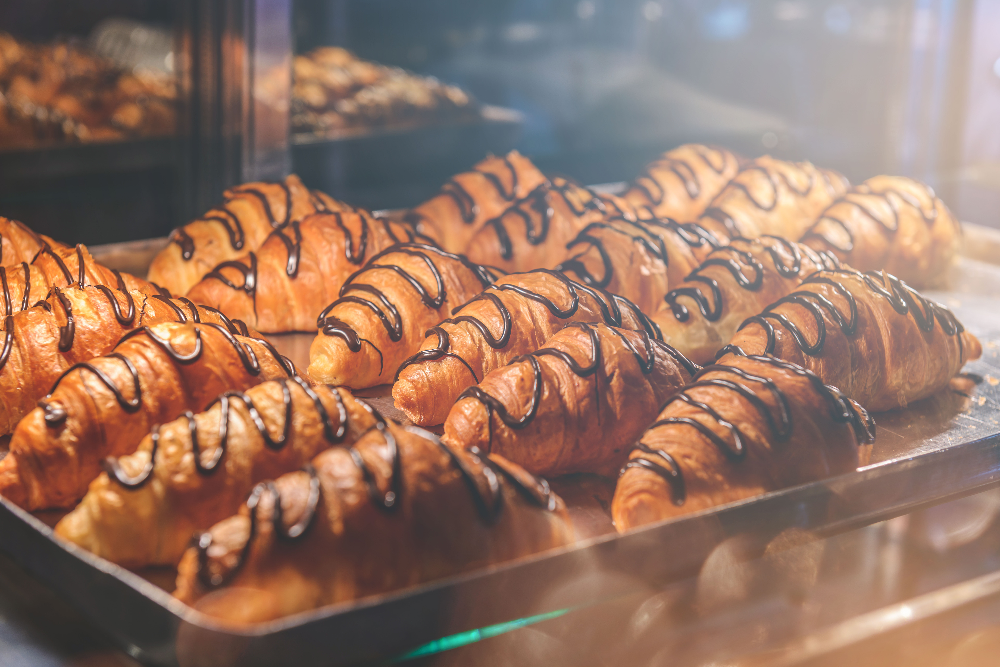

BEN MÜLLER
COME AND JOIN US!
Hofer Backbox? Was ist das denn? Genervt vom letschaten Sackerl Semmerl? Dann komm zu uns ins Cafe und genieß’ authentische Salzburger Dampf-Semmerl. Frisch gebacken schmeckts doch am besten! Oder #gönndir ein Croissant, das geht immer!


DEVELOPER'S HEAVEN
No Windows? No Cry. Bei uns bringen Fenster nur den Altstadt-Flair ins Lokal.
Für jeden Mac User gibts 1 Eur Rabatt bei deinem Lieblings-Kaffee.
Immerhin hast du schon genug Geld ausgegeben. 100% erneuerbaren Strom gibts bei uns natürlich als Gast
natürlich gratis!
#AWESOME